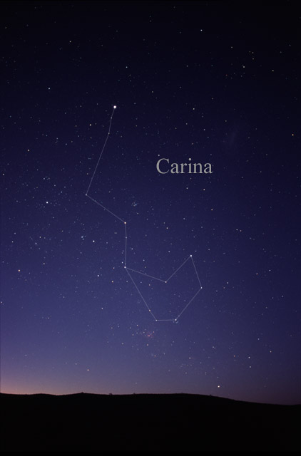

Constellation Carina
Carina (/kəˈraɪnə, kəˈriːnə/ kə-RY-nə, -REE-) is a constellation in the southern sky. Its name is Latin for the keel of a ship, and it was the southern foundation of the larger constellation of Argo Navis (the ship Argo) until it was divided into three pieces, the other two being Puppis (the poop deck), and Vela (the sails of the ship). Carina was once a part of Argo Navis, the great ship of the mythical Jason and the Argonauts who searched for the Golden Fleece. The constellation of Argo was introduced in ancient Greece. However, due to the massive size of Argo Navis and the sheer number of stars that required separate designation, Nicolas-Louis de Lacaille divided Argo into three sections in 1763, including Carina (the hull or keel). In the 19th century, these three became established as separate constellations, and were formally included in the list of 88 modern IAU constellations in 1930. Lacaille kept a single set of Greek letters for the whole of Argo, and separate sets of Latin letter designations for each of the three sections. Therefore, Carina has the α, β
